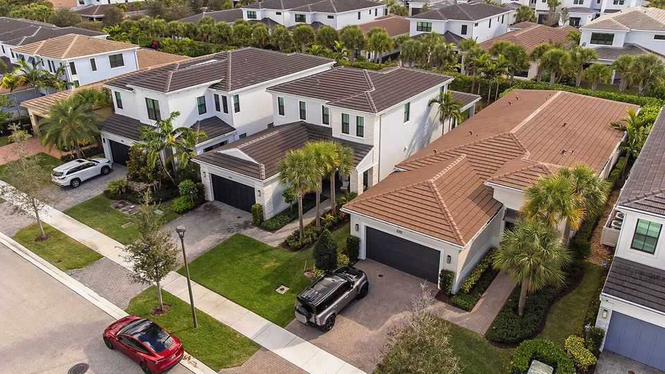

Florida has put America’s boldest tax cut on the ballot
It may be too tempting for voters to resist, but passing it will come back to bite them

Oct 1st 2026
FOR A YEAR Blaise Ingoglia, Florida’s chief financial officer, has been crossing the state on a “FAFO” speaking tour. The acronym, best known as a warning about pushing your luck, also stands for the Florida Agency for Fiscal Oversight. At a press conference in Palm Beach in June, Mr Ingoglia told taxpayers that the county “has been spending your money like drunken sailors”. Then he got into a row with the county administrator over whether $443m had indeed been misspent. Mr Ingoglia sees this as part of a worrying trend. “Governments are wasting money left and right, crying poor and continue to want more, more and more,” he said. His remedy? A massive property-tax cut designed to choke off their revenue.
In November voters in Florida will decide whether to make that tax cut part of the state’s constitution. Ron DeSantis, the outgoing Republican governor, drafted the measure, and the Republican-controlled legislature tweaked it before putting it before voters. The final version calls on state politicians to devise a way eventually to abolish nearly all property taxes on primary residences, much as Florida prohibited state income taxes a century ago. It is an extraordinarily bold attempt to rein in government spending and cut costs for struggling Floridian families. But if it passes, it may well backfire.
A surge of pandemic-era newcomers sent home prices in Florida soaring, pushing up property-tax bills and swelling local-government coffers. Statewide property-tax levies rose by nearly 40% in the three years to January. The new rule—known as Amendment 3—would raise the property-tax exemption on primary residences from $50,000 to $250,000 by 2028, meaning that, for most local property taxes, a home assessed at $400,000 would be taxed as if it were worth $150,000.
State economists estimate that Florida’s cities, counties and special districts would initially lose $5bn a year, with the annual hit rising to nearly $12bn within five years—an average 35% drop in their overall revenues, according to Cragin Mosteller of the Florida Association of Counties. Miami-Dade County alone would lose $1.4bn. Rural towns and suburban bedroom communities, where there are more homes than businesses, may have to start cutting basic services such as police and fire departments, election administration and hurricane preparation. In Gadsden County, a stretch of farm towns in the Florida panhandle, the amendment would take 8,000 of the 10,000 homes off the tax roll. Special districts that rely solely on property-tax revenue to keep drinking water safe and monitor disease-carrying mosquitoes could go broke. (Against the governor’s wishes, levies that finance schools would remain unchanged by the measure.)
These nightmarish forecasts have forged unusual alliances. Democrats opposed the amendment from the start. Now many fiscal conservatives do, too. Jeff Kottkamp, the boss of Florida TaxWatch, a government watchdog in Tallahassee, can’t remember the last time his organisation came out against slashing taxes. But it opposes Amendment 3. Mr Kottkamp worries that local politicians will offset the loss of revenue by charging fees for everything from access to public beaches to waste removal, a “bait-and-switch” that shifts the burden from rich homeowners to poorer residents. “People will get creative,” he says. “It could be a new oxygen tax.”
After Mr DeSantis vetoed a cost-benefit analysis of the amendment, opponents became more vocal, including flabbergasted policemen. “This is the most ludicrous piece of unresearched stuff I’ve seen,” said Grady Judd, the conservative sheriff of Polk County who is close to the governor. Steve Vancore, a pollster leading the “no” campaign, says he never thought he would live to see a Republican legislature pass a “defund the police” bill.
The only group that is publicly defending the tax cut is Florida Realtors, a trade group for estate agents that stands to benefit if lower property-tax bills encourage more people to buy homes. A Republican strategist in Tallahassee says that the amendment has become so “charged” that he is not advising incumbents running this cycle—even those who voted for the measure in the legislature—to back it. “We’re having to tell them to follow their own hearts and read their districts,” he says. In an interview with The Economist, Byron Donalds, the Republican candidate for governor, blamed municipalities for letting their budgets balloon but acknowledged that a spending crunch could come. “We’re going to work with them,” he says. “We’ll DOGE their budgets.” He is nonetheless encouraging people to vote for Amendment 3 in November.
Decades ago California passed Proposition 13, which capped property-tax rates and wreaked havoc on local-government finances. The state government was forced to step in and shore up cities, counties and schools. That offers lessons for Florida, which is projected to fall into deficit by 2030. For Amendment 3 to pass, 60% of voters need to approve it. Polls have it just about there. Cynics accuse Mr DeSantis, who may be considering another run for the White House, of timing the measure to allow him to claim progress on affordability without having to deal with the fallout. Republican leaders took a gamble by putting such a big economic decision to voters. Now some may be quietly hoping that Floridians save them from it. ■
Stay on top of American politics with The US in brief, our daily newsletter with fast analysis of the most important political news, and Checks and Balance, a weekly note that examines the state of American democracy and the issues that matter to voters.